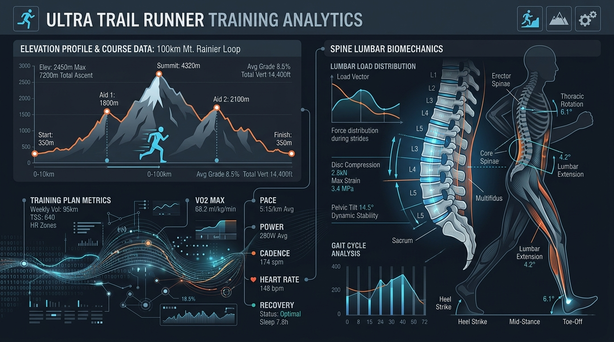

The summer of 2026 was anything but a smooth build-up. Between heatwaves in Marseille choking off daily training consistency and the lessons learned from a June 100k preparation that revealed a chronic weakness—Saturday training volume was systematically too low, leaving Sunday long runs unprimed without prior fatigue—the summer training block was fragmented at best.
In early August, I lined up at the Gauja by UTMB (50 km) in Latvia. The heatwave wasn’t an issue there—the weather was cool—but the Nordic climate presented a completely different trap: miles of deep, slick mud. It turned into a grinding 7-hour effort, where a massive amount of energy was lost simply fighting for traction on a heavy trail.
Upon returning from Latvia, reality set in. The ultimate target of the season was looming: the Hoka Chiang Mai 173 km (9,800m D+) in December.

1. Why Buy a Plan Just to Tune It with AI?
During the post-mortem of my 100k preparation in June, data analysis highlighted a consistent flaw: Saturday volume was chronically low, failing to generate the necessary pre-fatigue before Sunday long runs.
To prepare for a 173 km ultra with nearly 10,000 meters of elevation gain, I needed a more rigid framework. Rather than building a 14-week schedule from scratch, we decided to purchase an established 100-mile training plan on TrainingPeaks and use our Project Chiang M-AI architecture to audit, clean, and re-engineer it.
The objective was never to blindly follow a static .fit calendar, but to use it as raw material—passing it through our AI reasoning engine to adapt it to my actual biomechanics and real-world recovery limits.
2. The AI Audit: Anomalies Found in the Commercial Plan
When we ingested the 14-week commercial plan into Project Chiang M-AI, the system immediately flagged several major methodological flaws. The off-the-shelf plan contained absurdities that no human athlete should execute:
⚠️ Anomaly #1: Physiologically Impossible Workouts (e.g., 40 min in Z5c)
The plan prescribed intensity sessions that were physically impossible, such as 40 continuous minutes in Zone 5 Cardiac (Z5c)—the heart rate zone corresponding to maximal aerobic effort (>95% of maximum heart rate, or HRmax). Unlike Zone 5 Pace or Power (which can be sustained in short micro-intervals), holding a continuous cardiovascular effort above 95% HRmax for 40 minutes straight is a physiological impossibility; it leads directly to acute central nervous system exhaustion and rapid injury.
⚠️ Anomaly #2: Zero Recovery Weeks (Deload)
Proper periodization relies on a 3:1 progression (3 load weeks followed by 1 deload week). In this plan, week 4 maintained massive long runs (2,000m D+), offering only trivial intensity reductions early in the week. Without a true volume reduction, supercompensation cannot occur.
⚠️ Anomaly #3: Complete Absence of a Taper Period
Most absurdly, while the plan pushed high volume deep into the schedule, it completely lacked a progressive tapering phase before the main event. Arriving at the start line of a 173 km / 9,800m D+ race without a 2 to 3 week volume reduction means starting with half-empty batteries.
| Detected Anomaly | Off-the-Shelf Plan Prescription | Project Chiang M-AI Fix |
|---|---|---|
| Absurd Intensity | 40 min continuous in Zone 5 HR (Z5c) | 🔄 Controlled Flat Tempo/Threshold (3x8 min Z3) |
| Missing Deload | Week 4 maintained 2,000m D+ long runs | 🛑 Enforced 3:1 cycles with 30% volume drops |
| Missing Taper | Zero taper period before target race | 📉 Sanctuarized 14-day progressive taper |
3. The Crash: A Sudden Ramp-Up and a Locked Back
Even after catching these theoretical flaws, attempting to ramp up training load in early September after an irregular summer in Marseille proved costly.
The resumption was too violent. On September 1st, the body put a hard stop to the build: an acute lumbar spasm (bas du dos bloqué).
Biomechanical Reality at 92.5 kg:
At 92.5 kg body weight, every ground impact generates 200 to 250 kg of axial force transmitted up the posterior chain. When the lumbar erectors and psoas lock up in a protective reflex spasm, continuing to run forces those impact loads directly into spinal discs.
Emergency Protocol Implemented:
- 🛑 Immediate Stop of Running Impacts: Absolute pause on running during acute spasm.
- 🛑 No Heavy Core Planks: Traditional planks heavily engage the psoas, worsening lumbar shear stress during an acute flare-up.
- 🧘 90/90 Passive Decompression: Lying flat on the floor with calves resting on a chair at 90 degrees (15 min, 3x/day) to unload the lumbar spine.
- 🚶♂️ Gentle Flat Walking: “Motion is Lotion”—low-intensity walking to promote local blood flow and drain inflammation without impact shock.
4. The Re-Tuned Build for Chiang Mai 173km
With the back injury stabilizing, we fully re-engineered the remaining build within Project Chiang M-AI.
Key Adjustments to the Final Blueprint:
- Sanctuarizing Saturdays: Re-introducing structured Saturday runs to create true Back-to-Back (B2B) weekend blocks, directly fixing the structural weakness from our June 100k preparation.
- Strict 3:1 Periodization: Enforcing a full recovery week every 4th week.
- Dedicated Taper Phase: Locking in a 14-day progressive volume reduction leading into race day in Thailand.
┌─────────────────────────────────────────┐
│ 1. REVISED WEEKLY TEMPLATE │
│ - Tue: REST (Recovery) │
│ - Wed: Controlled Tempo (3x8m Z3) │
│ - Fri: Trail Hill Repeats │
│ - Sat: Saturday Pre-Fatigue Run │
│ - Sun: Long Mountain Trail D+ │
└────────────────────┬────────────────────┘
│
▼
┌─────────────────────────────────────────┐
│ 2. STRICT 3:1 PERIODIZATION │
│ - 3 progressive load weeks │
│ - 1 mandatory Deload / Recovery week │
└────────────────────┬────────────────────┘
│
▼
┌─────────────────────────────────────────┐
│ 3. TAPER & CHIANG MAI 173KM (9800M+) │
│ - 14-day progressive taper │
│ - Race day in Thailand (Dec 2026) │
└────────────────────┬────────────────────┘Conclusion: AI as the Blueprint Filter
Buying a commercial training plan can provide a useful starting point, but blindly executing a static plan with impossible heart rate targets or missing tapers is a direct path to injury.
By using Project Chiang M-AI to audit and tune the raw plan, we converted a flawed off-the-shelf program into an individualized, data-driven build tailored for Chiang Mai 173 km. The back is recovered, the schedule is clean, and the focus shifts to the final build! 🏔️⚡